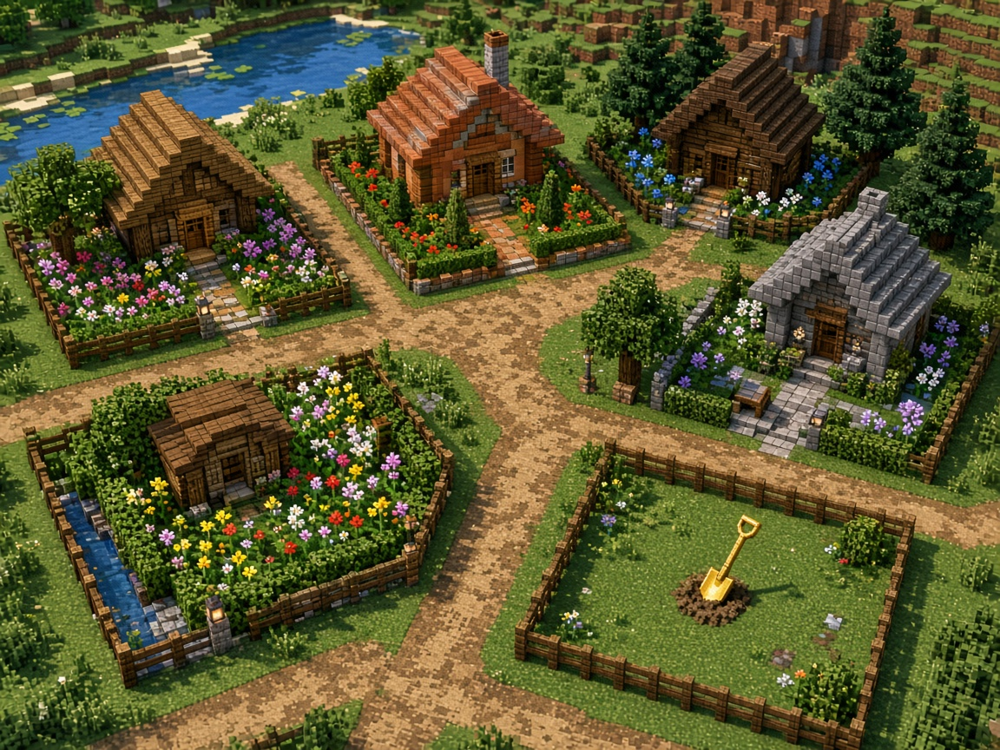
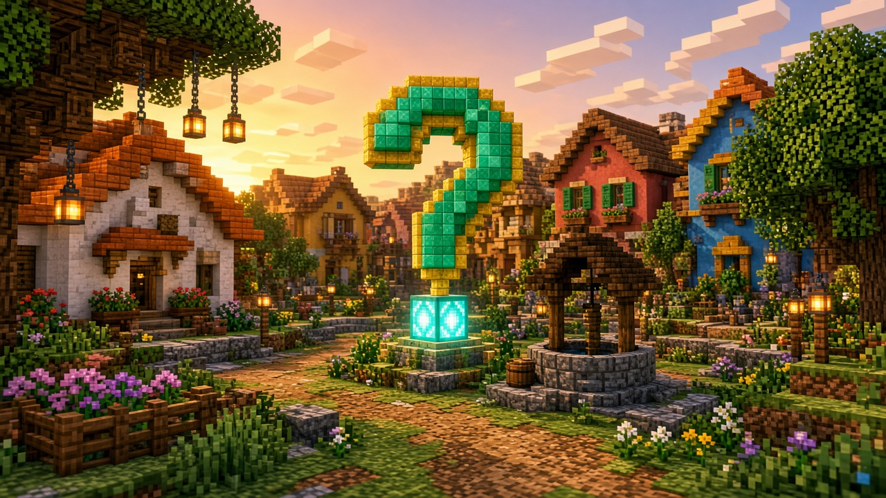

Tu parcela, no la de nadie
La pala de oro marca el terreno. Lo que construyes sigue el lunes. Si te cansas, se lo vendes a otro, en duros, no en euros.
¿Y tú qué preguntas?
Preguntones
Servidor de Minecraft Java
Preguntones es un barrio. Reclamas un terreno, se lo puedes vender a otro jugador y el sábado, a las 21:30, hay una pregunta. El mundo no se borra.
Copiado. Pégalo en Multijugador.

La pala de oro marca el terreno. Lo que construyes sigue el lunes. Si te cansas, se lo vendes a otro, en duros, no en euros.

A las 21:30, hora peninsular. Una pregunta, un rato, y el premio es un título o un aspecto. Los duros no se regalan.

Una casa rara, un huerto o una pregunta mejor. Java 26.1.2, sin puerto.
Minecraft es una marca de Mojang y de Microsoft. Este servidor es independiente: no está patrocinado ni asociado con ellos.
Reclamas un terreno y lo construyes: la casa, el huerto, el taller, lo que te quepa. Si quieres, se lo vendes a otro jugador. La venta es entre quienes juegan, en duros, la moneda del servidor. El euro no compra el terreno.
El mundo no se borra. No hay un reinicio del mapa al cambiar la semana. Lo que levantas sigue ahí mientras el servidor exista.
Hace falta Minecraft Java en la versión 26.1.2. El paso a paso está en Entrar.
Todo pasa en Discord: normas, soporte y la voz del sábado.
La cita del barrio es esta: sábado 21:30, hora peninsular.
Ese día se hace una pregunta. El premio es un título o un aspecto. No se entregan duros. Las reglas completas están en Normas.
La tienda, cuando cobre, solo tendrá cosméticos: color, estela, tag y mensaje de entrada. El rango Vecino cuesta 4,99 € IVA incluido, pago único. Un aspecto suelto de ejemplo cuesta 1,99 € IVA incluido.
El Discord del barrio es https://discord.gg/ZjcnvSkqsQ.